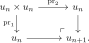
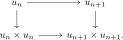
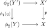
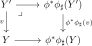
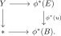

4.5. Colimits of topoi along étale morphisms
Recall from Definition 4.35 the wide subcategory \(\Topos^{\et} \subseteq \Topos\) spanned by the étale morphisms of topoi. The goal in this section is the following somewhat surprising theorem:
Theorem 4.41. ([Uemura 2025, Theorem 5.15])
The category \(\Topos^{\et}\) admits colimits, and these colimits are preserved by the inclusion \(\Topos^{\et} \hookrightarrow \Topos\).
There are two distinct issues in this theorem. For a fixed base topos \(T\), the classification \(\Topos^{\et}_{/T}\simeq T\) and descent in \(T\) make colimits of étale morphisms over \(T\) comparatively easy to control. The difficult point is global: if a diagram in \(\Topos\) has étale transition morphisms, one must prove that its structure morphisms into the colimit are again étale.
We follow the proof of Uemura (2025, Theorem 5.15). After passing to logoi, the problem becomes one about the projections from a limit of a diagram with étale transition morphisms. Uemura recognizes étale morphisms by two properties: preservation of dependent products and the existence of enough univalent families. The first property is stable under limits. For the second, univalent completion allows an initially unrelated tuple of families to be enlarged, by a fixed-point construction, to a compatible tuple in the limit logos. A general criterion for colimits in wide subcategories then completes the proof.
The theorem may also be viewed as a descent statement for the assignment \(T\mapsto\Topos^{\et}_{/T}\simeq T\). This perspective connects with the small and large topoi associated to geometric objects, which will reappear in Section 7.2 and Section 7.3; it is not needed for the proof here. We thank David Wärn for bringing Uemura's article to our attention.
4.5.1. Univalent families
A univalent family is one for which being obtained by pullback is a property rather than additional structure. The main result of this subsection is that every family admits a universal map to a univalent family. Besides avoiding the use of a larger universe of object classifiers, this has an important coherence consequence: maps between univalent families form propositions. Consequently, once compatible maps have been constructed in both directions, all higher compatibility data are automatic. The material in this subsection follows [Uemura 2025, Section 4].
Let \(T\) be a topos. We write
for the wide subcategory of \(\Ar(T)\) whose morphisms are pullback squares. We call an object \(u\colon E \to B\) of \(\Fam(T)\) a family in \(T\), and we call its codomain \(B\) the base of the family.
A family \(u \in \Fam(T)\) is univalent if it is a \((-1)\)-truncated object of the category \(\Fam(T)\). We write
for the full subcategory spanned by the univalent families.
Informally, a morphism \(u\colon E \to B\) is univalent if it is a property for an arbitrary morphism \(v\) in \(T\) to be a pullback of \(u\), i.e. if the anima \(\Hom_{\Fam(T)}(v,u)\) is \((-1)\)-truncated. Once we know that \(\Fam(T)\) admits binary products, this is equivalently the condition that the diagonal
is an isomorphism in \(\Fam(T)\).
Lemma 4.43. ([Uemura 2025, Lemma 4.2])
Let \(u\colon E \to B\) be a family in a topos \(T\). The functor
sending a pullback square \(v \to u\) to the induced morphism from the base of \(v\) to \(B\) is an equivalence.
Proof
Lemma 4.44. ([Uemura 2025, Lemma 4.3])
The wide subcategory \(\Fam(T) \subseteq \Ar(T)\) is closed under small colimits and pullbacks.
Proof
Proposition 4.45. ([Uemura 2025, Lemma 4.4])
The category \(\Fam(T)\) has binary products, and these products preserve small colimits in each variable.
Proof

Corollary 4.46. ([Uemura 2025, Corollary 4.6])
Let \(u_{\bullet}\colon [\omega] \to \Fam(T)\) be a sequence of univalent families. Then \(\colim_n u_n\) is univalent.
Proof
Proposition 4.47. ([Uemura 2025, Proposition 4.7])
The inclusion
admits a left adjoint. We call it the univalent completion functor.
Proof


This construction is the join construction for propositional truncation, transplanted from homotopy type theory to the category \(\Fam(T)\); compare [Uemura 2025, Proposition 4.7].
From this point on, we formulate the proof in the logos direction. Thus an étale morphism of logoi is, after choosing an object \(X\), the canonical functor \(T \to T_{/X}\) sending \(U\) to \(U\times X\), dual to the corresponding geometric morphism of topoi.
4.5.2. Dependent products
If \(T\) is a logos and \(p\colon X \to Y\) is a morphism in \(T\), then the pullback functor
preserves colimits by descent, hence admits a right adjoint \(\Pi_p\), called dependent product along \(p\).
Let \(\phi^*\colon T \to S\) be a morphism of logoi. We say that \(\phi^*\) preserves dependent products if, for every morphism \(p\colon X \to Y\) in \(T\), the canonical comparison
is an isomorphism for every \(Z \in T_{/X}\).
Proposition 4.50. ([Uemura 2025, Proposition 3.13])
The wide subcategory of \(\Logos\) spanned by the morphisms which preserve dependent products is closed under small limits.
Proof
Let \(\phi^*\colon T \to S\) be a morphism of logoi and suppose that \(\phi^*\) admits a left adjoint \(\phi_{\sharp}\colon S \to T\). We say that \(\phi_{\sharp}\) is \(T\)-indexed if, for every morphism \(p\colon X' \to X\) in \(T\) and every pullback square in \(S\) of the form
the transposed square

is a pullback in \(T\).
Lemma 4.52. ([Uemura 2025, Proposition 3.16])
Let \(\phi^*\colon T \to S\) be a morphism of logoi. Then \(\phi^*\) preserves dependent products if and only if it admits a \(T\)-indexed left adjoint.
Proof


Lemma 4.53. ([Uemura 2025, Proposition 4.10])
Let \(\phi^*\colon T \to S\) be a morphism of logoi which preserves dependent products. Then \(\phi^*\) sends univalent families in \(T\) to univalent families in \(S\).
Proof
4.5.3. Characterization of étale morphisms
We now combine dependent products with univalent families to recognize étale morphisms. Preservation of dependent products supplies an indexed left adjoint and hence a fully faithful factorization through a slice. The remaining question is whether that fully faithful factor is essentially surjective. The existence of enough families detects this, while univalence rigidifies the families sufficiently for the condition to survive the limit construction in the next subsection.
Let \(\phi^*\colon T \to S\) be a morphism of logoi.
We say that \(\phi^*\) provides enough families if, for every family \(v\) in \(S\), there exists a family \(u\) in \(T\) and a morphism \(v \to \phi^*(u)\) in \(\Fam(S)\).
If \(\phi^*\) preserves dependent products, we say that \(\phi^*\) provides enough univalent families if the same condition holds after restricting to univalent families.
We say that \(\phi^*\) is object-generating if the closure of the image of \(\phi^*\) under colimits and finite limits is all of \(S\).
Let \(\phi^*\colon T \to S\) be a morphism of logoi with a \(T\)-indexed left adjoint \(\phi_{\sharp}\). Then \(\phi^*\) factors as
where \(\psi^*\) is fully faithful.
Proof
Proposition 4.56. ({Uemura, [Uemura 2025, Proposition 5.10]})
Let \(\phi^*\colon T \to S\) be a morphism of logoi which preserves dependent products. Then the following conditions are equivalent:
\(\phi^*\) is an étale morphism.
The unit \(\id_S \to \phi^*\phi_{\sharp}\) of the indexed adjunction is cartesian.
\(\phi^*\) provides enough families.
\(\phi^*\) provides enough univalent families.
\(\phi^*\) is object-generating.
If these conditions hold, then \(\phi^*\) is equivalent, under \(T\), to the canonical étale morphism \(T \to T_{/\phi_{\sharp}(*)}\), \(Y\mapsto Y\times \phi_{\sharp}(*)\).
Proof


Proposition 4.57. ([Uemura 2025, Corollary 5.11 and Lemma 5.12])
For every logos \(C\), the functor
is an equivalence. Under this equivalence, the inclusion \(\Logos^{\et}_{C/}\hookrightarrow \Logos_{C/}\) preserves limits.
Proof
4.5.4. Proof of the main theorem
We are now in a position to prove Theorem 4.41, i.e. the fact that \(\Topos^{\et} \subseteq \Topos\) is closed under colimits, or equivalently that \(\Logos^{\et} \subseteq \Logos\) is closed under limits.
Lemma 4.58. ([Uemura 2025, Lemma 5.13])
Let \(\{C_i\}_{i\in I}\) be a small family of logoi. Then every projection
is an étale morphism.
Proof
Lemma 4.59. ([Uemura 2025, Lemma 5.14])
Let \(C_{\bullet}\colon I\to \Logos^{\et}\) be a small diagram, and let
be its limit in \(\Logos\). Then every projection \(\pi_i\colon C_{-\infty}\to C_i\) is an étale morphism.
Proof
Proposition 4.60. ([Uemura 2025, Proposition 2.6])
Let \(C\) be a category with small colimits, and let \(D\subseteq C\) be a wide subcategory. Suppose that:
For every object \(X\in C\), the wide subcategory \(D_{/X}\subseteq C_{/X}\) is closed under small colimits.
For every small diagram \(X_{\bullet}\colon I\to D\), if \(X=\colim_i X_i\) is computed in \(C\), then all structure maps \(X_i\to X\) lie in \(D\).
Then \(D\) is closed under small colimits in \(C\).
Proof
We finally get to the main result.
Proof
References
- Taichi Uemura. Colimits in the ∞-category of ∞-topoi and étale morphisms. 2025.
- Jiri Adamek. Free algebras and automata realizations in the language of categories. Commentat. Math. Univ. Carol., 15, 589–602. 1974.